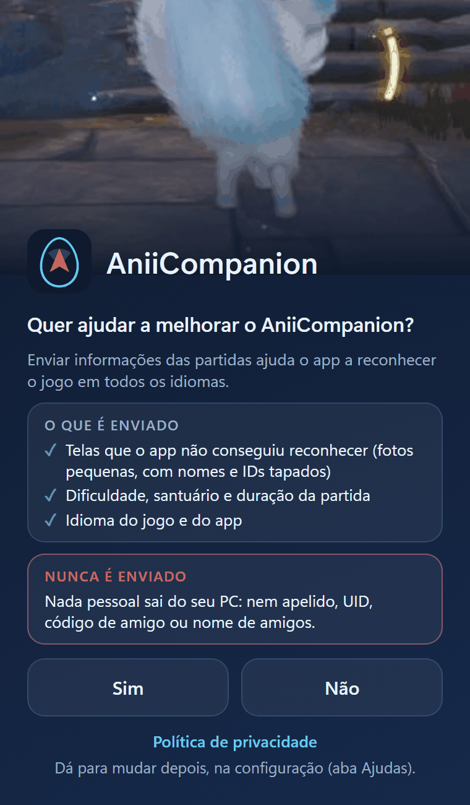

Privacidade
Hoje o app não envia nada de partida pela internet. Quando enviar, só vai se você permitir.
Resumo
O essencial
Por enquanto o app não envia nada de partida pela internet. Ele só pergunta, na primeira vez, se você quer ajudar a melhorar o AniiCompanion, guarda a sua resposta e deixa os dados da coleta apenas no seu PC. Quando o envio for ativado, numa versão nova, só quem respondeu Sim passa a enviar; quem respondeu Não continua sem enviar. Esta página será atualizada antes, dizendo o que muda. No envio automático, apelido, UID, códigos e nomes de amigos não saem do seu PC.
Atualizado em 15 de outubro de 2026.
Segurança
Limites do app
Ele funciona como uma gravação de tela.
| O app faz | O app nunca faz |
|---|---|
| Olha a imagem da janela do jogo, como uma captura de tela | Lê a memória do jogo |
| Acha você no minimapa | Injeta código no jogo |
| Desenha o mapa por cima do jogo | Usa mods |
| Guarda configurações e registros no seu computador | Pede conta ou login |
| Confere a assinatura de cada atualização | Envia dados de partida sem o seu Sim |
O Aniimo tem anti-cheat. Não falamos pelos desenvolvedores do jogo e não prometemos nada. Usar o app é decisão sua, por sua conta e risco.
Internet
O que sai do seu PC
O app usa a internet para estas cinco coisas.
| Atualização | Confere no GitHub se há versão nova. Antes de instalar, confere a assinatura do autor e o SHA-256 do arquivo. |
|---|---|
| Mapas | Nenhuma conexão. Os mapas já vêm dentro do app; ele não baixa mapas nem se conecta a sites de mapa. |
| Modo online | Só se você usar, e só com os amigos que adicionou. Detalhes abaixo. |
| Dados de partida | Hoje nada: o envio automático está desligado e os dados da coleta ficam só no seu PC. Quando for ativado, só se você disse Sim. O que iria, para onde e por quê. |
| Relatório | Nada. O botão só cria um arquivo no seu computador; ele só sai do PC se você mesmo o mandar. Detalhes. |
Dados de partida
Ajudar o projeto com dados das suas partidas
Opcional. Hoje o envio está desligado; a descrição abaixo vale para quando ele for ativado.
Estado atual: o app não envia nada automaticamente. Ele pergunta “Quer ajudar a melhorar o AniiCompanion?” na primeira vez e guarda a resposta, e os dados da coleta ficam só no seu PC. Quando o envio for ativado numa versão nova (junto com o servidor no ar), quem respondeu Sim passa a enviar automaticamente, e esta página será atualizada antes. Quem respondeu Não continua sem enviar. Até lá, o único jeito de esses dados chegarem ao projeto é você usar “Salvar relatório” e mandar o arquivo por conta própria.
Cada partida gera um pequeno resumo no seu computador. Quando o envio estiver ativo e você tiver permitido, o app o enviará depois que a partida terminar. Se você disse Não, o resumo fica só aqui e nada sai.
O que será enviado (quando o envio estiver ativo)
| Idiomas | O idioma do app, o do Windows, os do reconhecimento de texto (OCR) e o idioma do jogo, que o app deduz pelo que leu na tela. Mostra em quais idiomas o app já funciona bem. |
|---|---|
| Textos não reconhecidos | Quando o app lê um texto numa tela que conhece e não o reconhece, envia esse texto (até 500 caracteres, junto com o recorte da mesma tela; no máximo 5 por partida). Ajuda a achar telas e traduções novas. |
| Recortes de tela | Fotos pequenas (JPEG, até 800 px de lado, 80 KB e no máximo 5 por partida) de áreas fixas da tela onde o jogo não mostra nomes. Nome, UID e códigos que o app reconhece são pintados de preto antes de a imagem sair do seu PC. Mostram como a tela aparece em cada idioma. |
| Dados da partida | Dificuldade, santuário, duração e como a partida terminou (tela de resultados, tela de XP ou nenhuma). Ajuda a entender como as partidas acontecem. |
| Versão do app | Para saber de qual versão veio o dado. |
O que nunca sai do seu PC no envio automático
- Seu apelido, seu UID e o código de amigo.
- Nomes de amigos.
- Pastas do seu computador e o nome de usuário do Windows.
- Seu endereço IP. O servidor só o usa, como hash com sal diário, para limitar cada instalação a 20 envios por dia; o número nunca é guardado.
O limite da tarja
A tarja depende do reconhecimento de texto. Um nome em fonte estilizada que ele não leia poderia passar. Por isso só recortamos áreas onde o jogo não mostra nomes, conferidas em partidas reais. Se uma área mostrar um nome, ela sai da lista de recortes.

A pergunta da primeira vez.
Sua permissão
Na primeira vez, o app pergunta: Quer ajudar a melhorar o AniiCompanion? Você responde Sim ou Não, e o app guarda a resposta. Enquanto o envio está desligado, a configuração mostra só a chave Enviar dados das partidas e o link Política de privacidade. Para mudar de ideia, use essa chave; desligar não tira nenhuma função do app.
Código de envio e apagar seus dados
Nada foi enviado ainda, então ainda não há o que apagar no servidor. Quando o envio for ativado, ele não usará conta: o app reconhecerá a sua instalação por uma chave criada no seu PC e mostrará um código curto dela na configuração, no campo Código de envio (8 caracteres, ex.: a3f9c27e). Esse código é aleatório e não diz quem você é; pela lei (LGPD e GDPR) ele conta como dado pseudonimizado, e só serve para apagar os seus envios e para o limite diário. O campo Código de envio e o botão Apagar meus dados só aparecem nessa versão. Com o botão, o app pedirá confirmação ("Apagar tudo que este app já enviou?") e apagará tudo o que a sua instalação enviou. Se preferir, poderá pedir por e-mail informando o código (veja Seus direitos).
Quando o envio estiver ativo, o que estiver no servidor será apagado sozinho depois de 180 dias.
Onde fica e quem lê
Hoje os dados da coleta ficam só no seu PC. Quando o envio estiver ativo, irão para a Cloudflare (servidor e banco D1); até saírem, os envios esperarão numa fila local de até 50 no seu PC. Só a equipe do projeto lerá, para análise. Nada será público e nada será vendido.
Para quê
Para melhorar o reconhecimento das telas em todos os idiomas e para entender como as partidas acontecem.
Base legal
O envio automático, quando existir, se baseará no seu consentimento: LGPD (Lei 13.709/2018), art. 7º, I, e GDPR, art. 6(1)(a). Você pode revogá-lo quando quiser, e o que foi enviado antes pode ser apagado.
Seus direitos
Você pode pedir acesso, correção e exclusão dos seus dados e revogar o consentimento. Escreva para aniicompanion.help@gmail.com e, se o envio já estiver ativo, informe o seu código de envio.
Amigos
Modo online: quem vê o quê
Só entra em ação com amigos que você adicionou. Não existe conta.
Servidores públicos de encontro
Os amigos se acham por relays públicos do Nostr.
- Eles veem o seu endereço IP e o horário.
- Eles não veem o conteúdo, que vai cifrado.
Conexão direta
Quando os dois apps se ligam de computador para computador:
- Seu amigo vê o seu IP de casa, e você vê o dele.
- Só adicione quem você conhece.
Quem está na sua equipe vê no mapa o seu ponto, com o nome que você escolheu. Vê também os ninhos, ovos e baús que você achou. Mais ninguém. Isso não depende dos dados de partida acima.
Relatório
“Salvar relatório” não envia nada
O botão cria um .zip na pasta Downloads, com os registros do app, algumas fotos da janela do jogo (outras janelas abertas na hora podem aparecer nelas) e os dados da coleta: o resumo das partidas e os recortes de tela com as tarjas.
Os registros do app podem conter o seu apelido, lido da tela pelo app. Por isso o arquivo só sai do seu computador se você mesmo o mandar, e vale mandar só para quem você confia. Hoje é o único jeito de os dados chegarem ao projeto. O que tem dentro.
Download
Conferir se o download é o original
Cada versão publica o SHA-256 do zip. Compare com o do arquivo que você baixou. Se for diferente, não use.
Como conferir o SHA-256Mapa coletivo: chance dos ninhos
Ainda não existe. A ideia é calcular a chance de cada ninho com as partidas de todos, usando a planta do santuário, a dificuldade, onde os ninhos apareceram e os números da tela de fim de partida.
Nada disso é enviado hoje. Quando existir, vai depender do mesmo Sim e do envio estar ativo, e esta página será atualizada antes, dizendo exatamente o que muda.